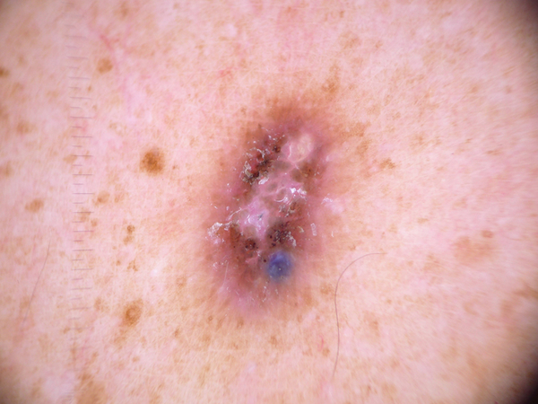
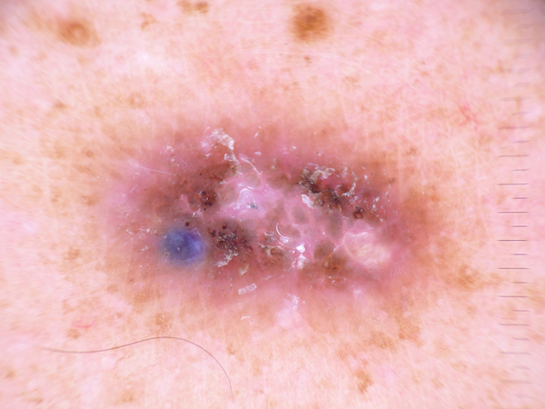
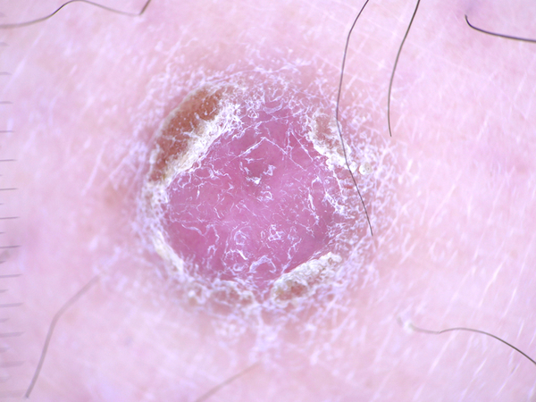
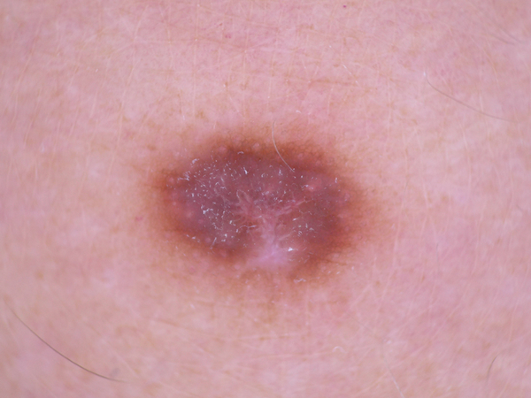

-
What is this lesion?
Dermatofibroma is a benign skin lesion regarded as either a benign proliferation or an inflammatory reaction to minimal trauma.
-
What does it look like?
The most common dermatoscopic presentation is reticular lines at the periphery with a central white patch denoting fibrosis.
-
Should I see a doctor?
DEPENDS. These lesions are common noncancerous skin growth in adults. If you have any concerns or other symptoms (e.g. multiple growths in a short period of time, bleeding, pain) please consult a doctor.
-
What the doctor would do about it?
Dermatofibroma can usually be diagnosed by just looking at it. They do not go away on their own. Dermatofibromas rarely require treatment but can be removed for cosmetic reasons or if painful/itchy.



